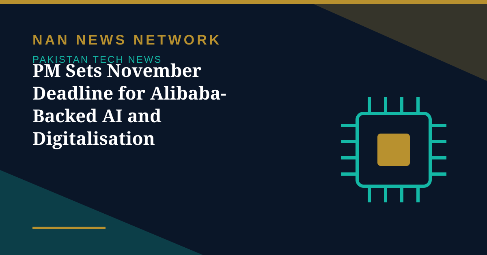

PM Sets November Deadline for Alibaba-Backed AI and Digitalisation Projects

Prime Minister Shehbaz Sharif on Wednesday directed relevant ministries to complete by November all necessary measures for projects being undertaken with Alibaba to advance artificial intelligence, digitalisation, exports and public service delivery. He issued the directives while chairing a review meeting in Islamabad on progress in AI, digitalisation and cooperation with Alibaba in Pakistan's economy and governance sectors.
What the projects cover
The push spans artificial intelligence, digital government, exports, agriculture, health and the fuel supply chain. The cooperation was sealed during the prime minister's visit to China, when a memorandum of understanding was signed at Alibaba's headquarters in Hangzhou. The prime minister said AI and digitalisation were central to national development, and that the government wants the full benefit of its strategic partnership with Alibaba.
Specific directions included implementing an early cancer detection system with Alibaba's cooperation, launching an AI training programme for IT graduates under the Ministry of Information Technology's Ignite programme, and asking the Oil and Gas Regulatory Authority to introduce an analytics system with Alibaba to monitor the petroleum products supply chain. The Export Promotion Board was instructed to work with Alibaba to increase Pakistan's exports, and the prime minister welcomed Alibaba's cooperation in helping Pakistani agricultural commodities reach Chinese markets. The November deadline turns a set of agreements into a delivery timetable, and ministries now have days, not months, to show progress.
Sources: APP via TezKhabar, October 28, 2026
More on Pakistan Tech News
- Pakistan Internet May Slow Until November 2 as AAE-1 Cable Undergoes Repairs
- Pakistan's 5G Now Reaches 24 Cities After $509 Million Spectrum Auction
- Pakistan Announces Urdu AI Model 'Buraq' to Keep National Data at Home
- PM Launches Two-Year Drive to Give 500,000 Chromebooks to Talented Students
- Pakistan to Host UN Space Technology Conference on Early Warnings and Climate Action
- PAK-US Tech Connect 2026 Takes 16 Pakistani Tech Firms Across America
- Pakistan Wins 11 Awards at the ASOCIO Digital and AI Awards 2026
- Pakistan Showcases AI Innovations at Abu Dhabi's AI Everything Global 2026